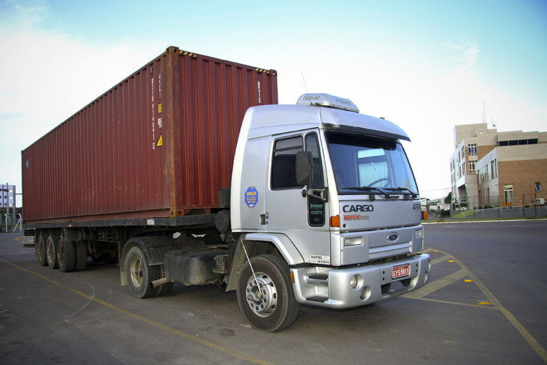
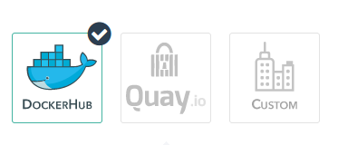

Containers na prática
e algo mais !!!
Mas antes!
- O que será desse treinamento ?
- Introdução
- O que é Docker
- Além do Hype
- Dockerfile
- Comandos
- Volumes
- Network
- Registry
- Docker-compose
- Hands-on
- Algo Mais???
O que não vou falar
- Docker vai resolver sua vida!
- Migre tudo pra docker
- Como fazer SEU app em docker

O que é Docker ?
X

Da onde veio isso ?

História
Chroot
Jails (FreeBSD)
Zones (Solaris)
OpenVZ (Parallels)
LXC
dotCloud
Google + RedHat
"Batteries Included"
Cgroups
Namespaces
Netlink
Netfilter
AppArmor
SeLinux
Capabilities
C.O.W.
Layers
Imagens
Imagens X Containers
Instalando
Apenas 1 pacote e você está pronto!!
#Docker-Engine

Dockerfile

Parâmetros
- FROM
- RUN
- ADD
- COPY
- ENV
- VOLUME
- WORKDIR
- USER
- EXPORT
- ENTRYPOINT
- CMD
Boas Práticas
- Não Instale Pacotes Desnecessários
- Defina a Versão de Tudo que Utilizar
- Construa o Mínimo de Camadas Possíveis
- Agrupe os Comandos (Ex.: apt-get)
- Não Mapear Porta Pública
- Deixe as Partes Dinâmicas Para o Fim
- Use TAGs
- Execute apenas 1 processo por container
Comandos
- build
- ps
- attach
- exec
- stats
- logs
- rm
- rmi
RUN
- it / d
- Men & CPU
- Port
- Name
Volumes
- Local / Host
- Data-Only Containers
- NFS / Storages
- Flocker
Networking
- --hostname
- --expose
- --net (Create / Use)
- --link
Registry
Docker-Compose

Services , Network e Volumes
docker-compose.yml
web:
build: .
volumes:
- .:/code
links:
- redis
environment:
- VIRTUAL_HOST=teste.docker
redis:
image: redis
lb:
image: jwilder/nginx-proxy
volumes:
- /var/run/docker.sock:/tmp/docker.sock:ro
ports:
- 80:80
Comandos
- Build
- Start/Stop/Restart
- Up / Down
- Scale
- Pause / Unpause
HANDS-ON
Step-By-Step
- docker-machine create --driver virtualbox Cargueiro
- docker-machine env Cargueiro
- eval $(docker-machine env Cargueiro)
- git clone https://github.com/juniorjbn/compose-scale
- docker build -t docker001 .
- docker run -d --name redis redis
- docker run -it -p 80:80 --link redis:redis --name python_app docker001
- Navegador 192.168.99.100
- Como escalar essa aplicação ?
Um passo a frente
- Analisar docker-compose.yml
- docker-compose up --build
- Editar /etc/hosts
- Acessar teste.docker
- F5 sem parar
- docker-compose scale web=3
- F5 sem parar, um olho nos hits e outro no hostname

Dúvidas
Ainda temos tempo para uma última coisa ?

Agradecimentos aos que compartilham!
LinuxTips
Jasonwilder.com
Techfree.com.br
Deis.io
Docker.io
Google.com